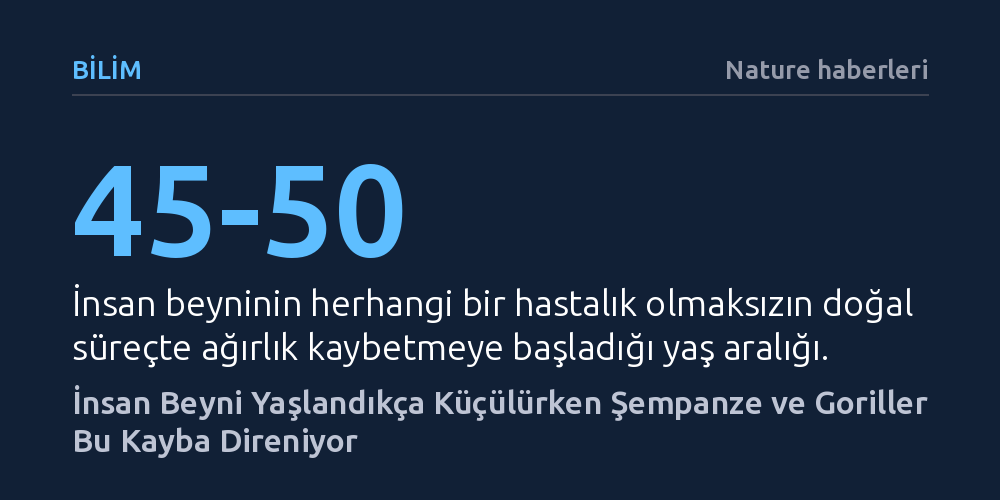

BILIM · Nature haberleri · 2026-10-10
İnsan beyni 45-50 yaşından itibaren küçülmeye başlarken, şempanze ve goril gibi en yakın akrabalarımızda yaşa bağlı bu ağırlık kaybının görülmediği belirlendi. 601 insansı maymun beyninin incelendiği araştırma, yaşlanmaya bağlı beyin küçülmesinin insana özgü olabileceğini gösteriyor.
Yaşlanmayla gelen beyin küçülmesinin tüm gelişmiş canlılar için kaçınılmaz biyolojik bir zorunluluk değil, insanın olağanüstü büyük beyni için ödediği türe özgü bir evrimsel bedel olabileceğini ortaya koyar.

İnsan biyolojisinde yaşlanmanın en belirgin fiziksel izlerinden biri beyinde görülür. Herhangi bir nörolojik hastalık bulunmasa dahi insan beyni 45 ila 50 yaş civarından itibaren kademeli olarak ağırlık kaybetmeye ve hacimce küçülmeye başlar. Tıp ve evrimsel antropoloji çevrelerinde uzun süredir bu sürecin, uzun yaşayan tüm büyük primatlar için doğal ve kaçınılmaz bir yıpranma olduğu varsayılıyordu.
Ancak saygın bilim dergisi PNAS'ta yayımlanan yeni bir araştırma, bu köklü kabule doğrudan meydan okuyor. İnsana genetik açıdan en yakın canlılar olan şempanze, goril, orangutan ve bonobolar üzerinde yapılan kapsamlı incelemeler, söz konusu türlerin ileri yaşlarda insanlardakine benzer bir beyin ağırlığı kaybı yaşamadığını ortaya koydu.
Araştırmacı B. Hrvoj-Mihic ve çalışma arkadaşları, insanın yaşayan en yakın evrimsel akrabalarını içeren geniş bir veri tabanını mercek altına aldı. Çalışmada şempanzeler (*Pan troglodytes*), goriller (*Gorilla gorilla*), orangutanlar (*Pongo pygmaeus* ve *Pongo abelii*) ile bonobolardan (*Pan paniscus*) oluşan toplam 601 bireye ait beyin verisi ayrıntılı biçimde analiz edildi.
Farklı yaş gruplarındaki bireylerin incelenmesi sonucunda, yaşlı insansı maymunların beyin ağırlıklarında insanlarda gözlemlenen belirgin düşüş eğilimine rastlanmadı. Yüzlerce örneğe dayanan bu güçlü örneklem boyutu, türler arasındaki ayrışmanın bireysel farklılıklardan değil, doğrudan türe özgü biyolojik mekanizmalardan kaynaklandığını gösteriyor.
Bu bulgu, beynin yaşa bağlı yapısal küçülmesinin evrensel bir memeli kaderi olmadığını gösteriyor. İnsan beyni, diğer büyük insansı maymunlara kıyasla hem vücut ağırlığına oranla çok daha hacimlidir hem de dinlenme halindeki vücut enerjisinin yaklaşık beşte birini tüketecek kadar yüksek bir metabolik tempoda çalışır.
Bilim insanları, yaşla birlikte ortaya çıkan bu ağırlık kaybının yalnızca insanda görülmesini evrimsel bir ödünleşim olarak yorumluyor. İnsan türünün edindiği olağanüstü bilişsel kapasite ve aşırı enerji harcayan karmaşık nöronal ağlar, yaşam süresinin ilerleyen dönemlerinde doku bütünlüğünün korunmasını zorlaştırarak beynimizi yaşlanmanın yıkıcı etkilerine karşı daha kırılgan kılmış olabilir.